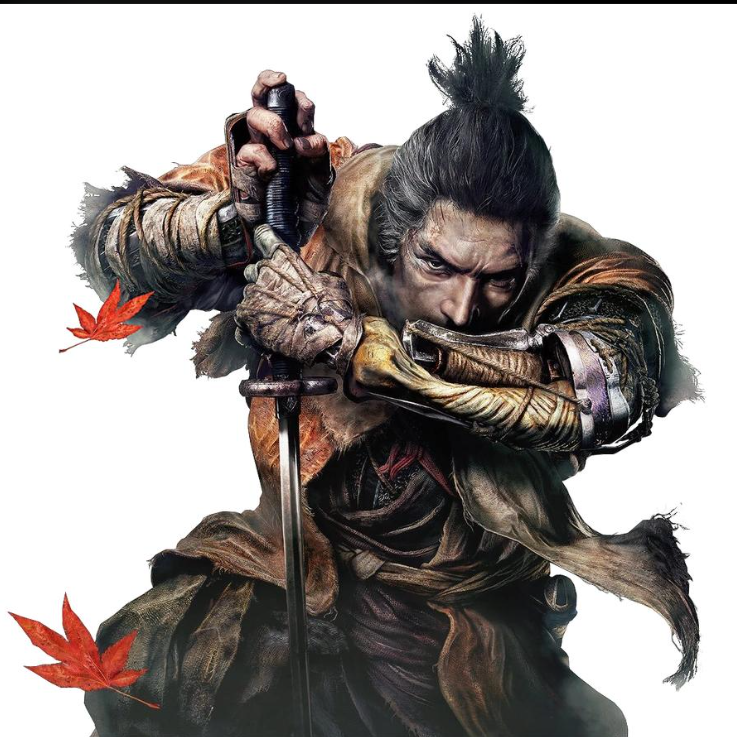
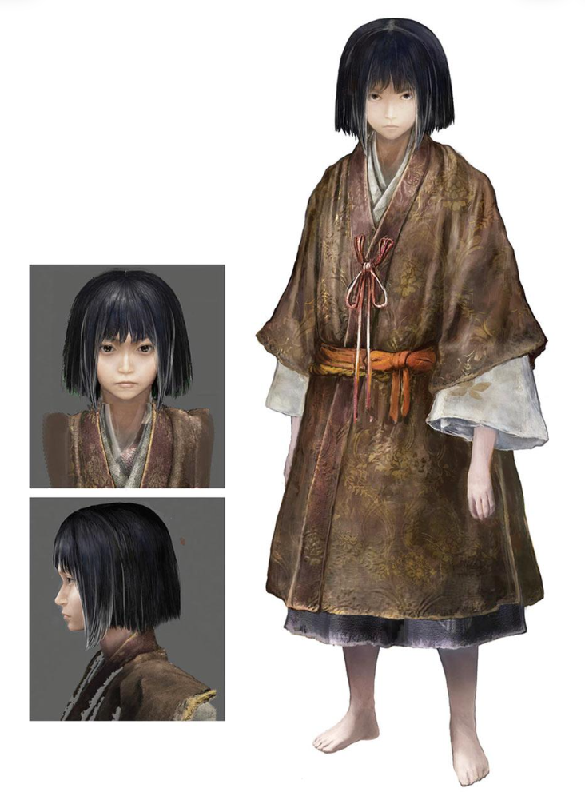
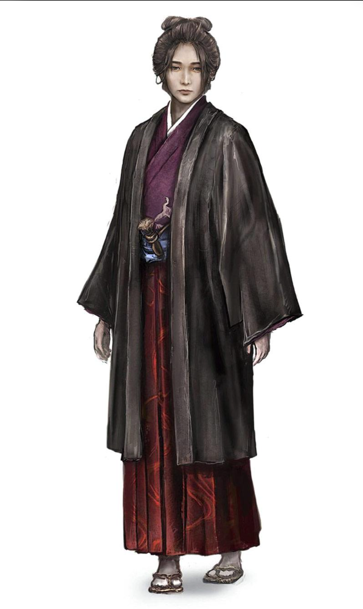
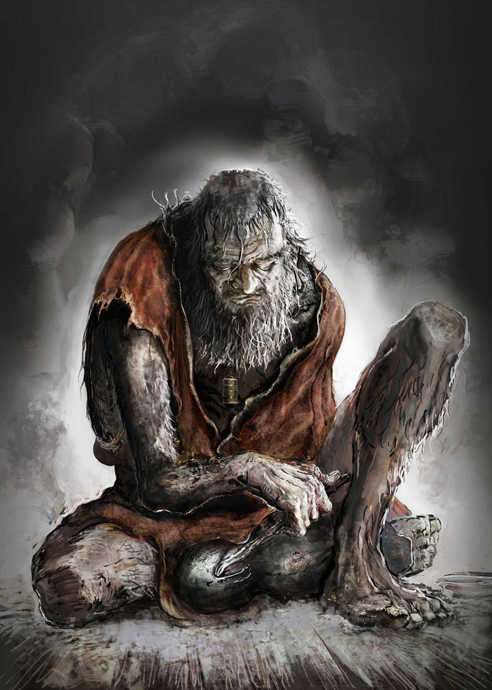
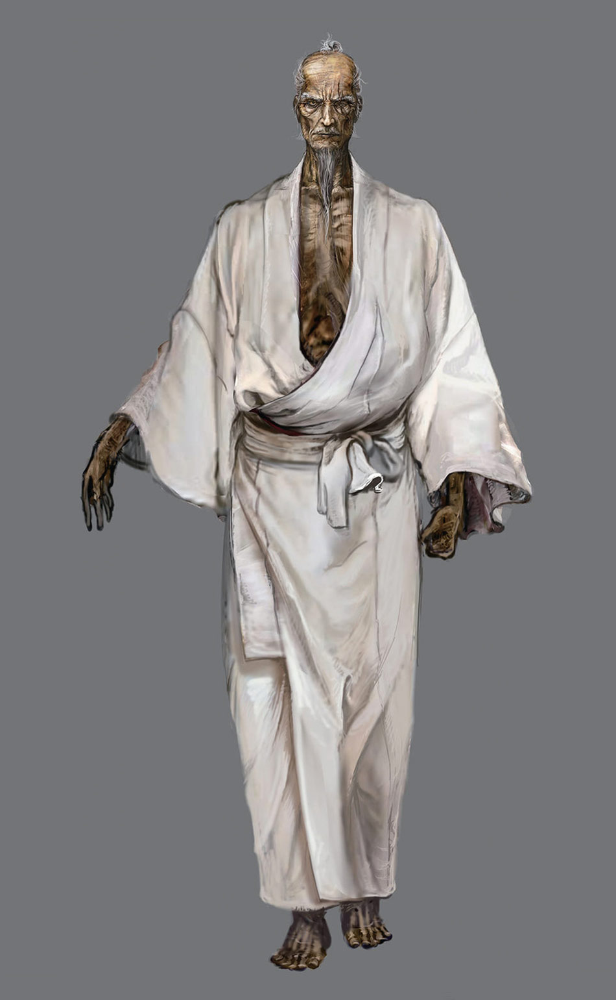
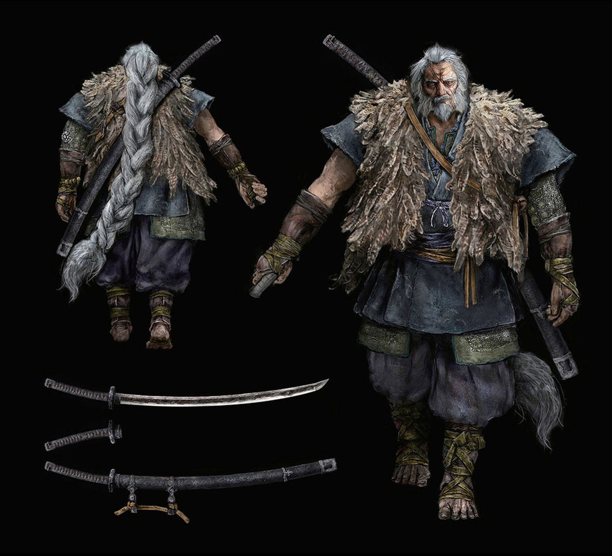
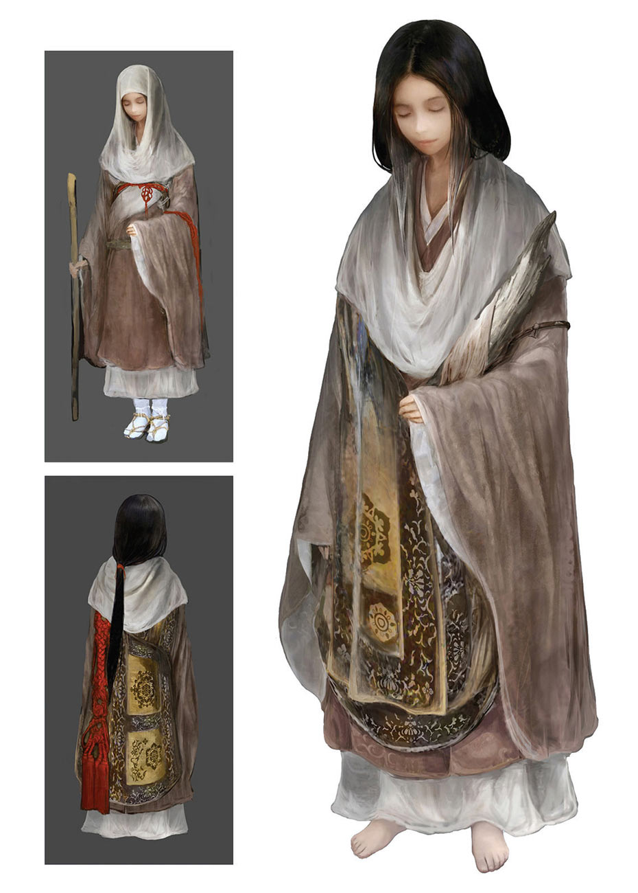

Sekiro
Sekiro, también conocido como Lobo, es el personaje protagonista de Sekiro: Shadows Die Twice. Es un shinobi que sirve a un joven señor descendiente de un antiguo linaje. Ligado a su honor, es un hombre sereno y reservado, aunque también despiadado a la hora de completar su misión de venganza con los métodos que sean necesarios [5].
Cuando Sekiro era niño sufrió las consecuencias de un conflicto que afectó a la población japonesa al final de la Era Sengoku. Tanto él como El Búho sobrevivieron a la batalla. El joven se dedicó a saquear algunos cadáveres hasta que se encontró con este guerrero. El Búho pasó ligeramente el filo de su espada a través de su rostro, dejándole una cicatriz que le marcó del mismo modo que a él. El shinobi le preguntó si tenía a alguien en su vida, y al deducir que se encontraba huérfano, le acogió bajo su amparo [5].

El Descendiente Celestial
El Descendiente Celestial, también conocido como joven señor y de nombre Kuro, es parte integral de la trama del juego y de los eventos que se desarrollan durante el mismo. Es el único descendiente de un antiguo linaje misterioso y, al igual que los shinobi, está solo en el mundo [5].
Fue adoptado y criado por la familia Hirata. Al contrario que los niños de su edad, es tranquilo, tiene un corazón fuerte, y da una impresión natural de dignidad. Debido a su linaje es capturado por el Comandante del Clan Ashina, fallando el Lobo en su protección [5].
Él es quien le da al Lobo la espada Kusabimaru y la Calabaza curativa. Además, le encarga al Lobo que encuentre una ruta de escape para abandonar el territorio de Ashina. Sin embargo, Genichiro Ashina termina capturando a Kuro en el campo de hierba plateada, independientemente del resultado del combate entre el Lobo y él [5].
Más adelante, Kuro se encuentra en la cima del Castillo Ashina, donde es persuadido por Genichiro para que lo acepte en su juramento inmortal. Después de derrotar a Genichiro se le puede encontrar en su habitación en el castillo, proponiéndole al Lobo el abandono de la inmortalidad [5].
Tras obtener las Lágrimas del dragón divino, El Lobo se entera de que Genichiro se ha llevado a Kuro al campo de hierba plateada. Después de derrotarlo, El Lobo deberá decidir el destino de Kuro [5].

Emma
Emma la médica es un personaje de Sekiro: Shadows Die Twice. Emma es una joven curandera que le ofrece ayuda a Sekiro en su búsqueda para salvar a su señor. Como discípula de Dogen, Emma es una de las médicas más capacitadas en Ashina y parece tener vínculos con varios miembros de la corte [5].
Se la puede ver por primera vez durante el prólogo, caminando hacia el Embalse de Ashina y dejando caer una carta en el pozo en el que se encuentra Sekiro. Más tarde ayuda al Lobo a instancias de su maestro, aunque al principio el nombre y las intenciones de su amo no están del todo claros [5].
Está presente en el Templo desolado junto con el Escultor. Ayuda al Lobo ofreciéndole mejoras a su Calabaza curativa a cambio de semillas de calabaza. Después de que el Lobo haya muerto varias veces, este se despertará en el Templo desolado, encontrando al Escultor sufriendo de dracogripe. El Escultor le pedirá al Lobo que hable con Emma al respecto [5].

Escultor
Este escultor es un antiguo monje budista que reside en un templo abandonado, ejercido como busshi tallando innumerables estatuas de Buda. Es un ermitaño tranquilo y poco amistoso y parece saber mucho sobre Sekiro y su deber, habiendo ayudado potencialmente a traerlo de vuelta de la muerte [5].
Al igual que Sekiro, también le falta un brazo, en concreto el izquierdo. Para reemplazar su brazo faltante, le entrega una prótesis de shinobi al Lobo. Está presente en el Templo desolado. El Escultor es el encargado de instalar y mejorar las diversas herramientas protésicas de shinobi que se encuentran a lo largo del juego. Además, proporcionará ciertos textos esotéricos a medida que Sekiro obtiene puntos de habilidad y nuevas herramientas de prótesis [5].

Isshin Ashina
Isshin Ashina es el fundador del Clan Ashina y abuelo del Comandante Genichiro. Fue un kensei, un honorable guerrero japonés conocido por su maestría con la espada. Tiempo atrás, tomó el control de su región en una sola generación, fundando el clan y ganándose el título de "Héroe del País del Norte" [5].
Cuando era joven, luchaba sin parar puliendo su técnica con sangre enemiga. Consolidó sus enseñanzas en el "estilo Ashina" para favorecer el dominio de su clan. Durante los eventos del juego, el fundador del Clan Ashina se muestra como un hombre ya en la tercera edad. Es un hombre muy alto, con cabello canoso y muy delgado, se muestra cansado muchas veces ya que usualmente se mantiene en constante reposo gracias a Emma quien lo cuida [5].

El Búho
El Búho, cuyo verdadero nombre es Ukonzaemon Usui, es el mentor de Sekiro. Cuando éste era un niño, sufrió las consecuencias de un conflicto que afectó a la población japonesa a finales de la Era Sengoku. Al encontrarse huérfano, el Búho le acogió bajo su amparo [5].
Él mismo entrenaría a Sekiro y usaría a otros maestros shinobi para que sean mentores del niño, como la Dama Mariposa. Durante la formación de Sekiro, el Búho empezó a ver al niño como su hijo adoptivo, y del mismo modo, Sekiro veía al Búho como su padre adoptivo [5].

Niña Celestial
La Niña Celestial es la única miembro superviviente de los niños de las aguas rejuvenecedoras. Se encuentra en el Sanctasanctórum del templo Senpo, custodiando la Espada Mortal [5].
Tras recibir la Espada Mortal, se puede hablar con ella de nuevo para recibir arroz. Después de consumir (o regalar) el arroz se puede hablar con ella de nuevo y pedirle más. Si el jugador le pide arroz tres veces la Niña Celestial se enfermará y habrá que curarla con un caqui (o el caqui de Taro). Tras esto, la Niña Celestial le dará a Sekiro arroz para Kuro [5].
